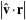

|
The equation of a line in slope-intercept
form is given by
so the line has slope . Now consider
the distance from a point  to the
line. Points on the line have the vector coordinates to the
line. Points on the line have the vector coordinates
Therefore, the vector
is parallel to the line, and the vector
is perpendicular to it. Now, a vector from the point to the line
is given by
Projecting  onto , onto ,
|  | |
(6)
| |  | |
(7)
|  |  |  |
(8)
| | | |
(9)
| | | |
(10)
| | |  |
(11)
|
If the line is specified by two points and
, then a vector perpendicular
to the line is given by
Let be a vector from the point to
the first point on the line
then the distance from to the
line is again given by projecting  onto onto  , giving , giving
As it must, this formula corresponds to the distance in the three-dimensional case
with all vectors having zero -components, and
can be written in the slightly more concise form
where denotes a determinant.
The distance between a point with exact trilinear coordinates
and a line
is
(Kimberling 1998, p. 31).
Kimberling, C. "Triangle Centers and Central Triangles." Congr. Numer. 129,
1-295, 1998.
|